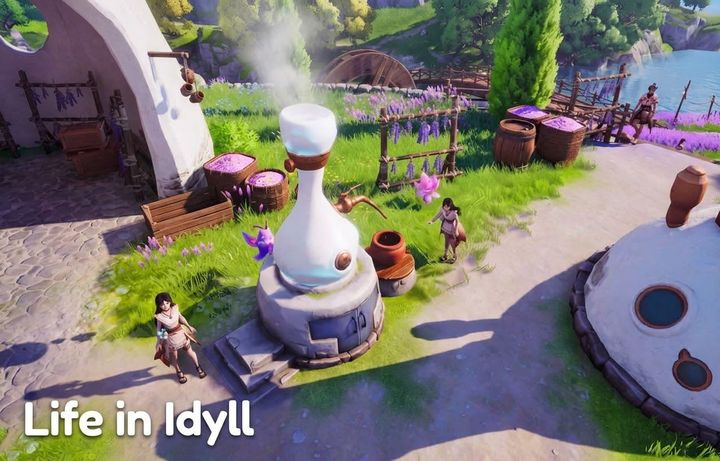
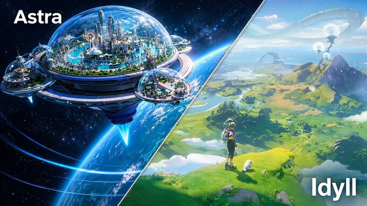
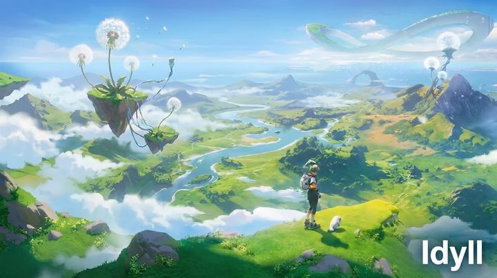
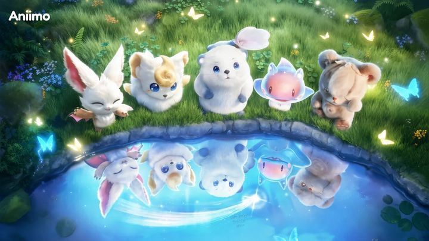
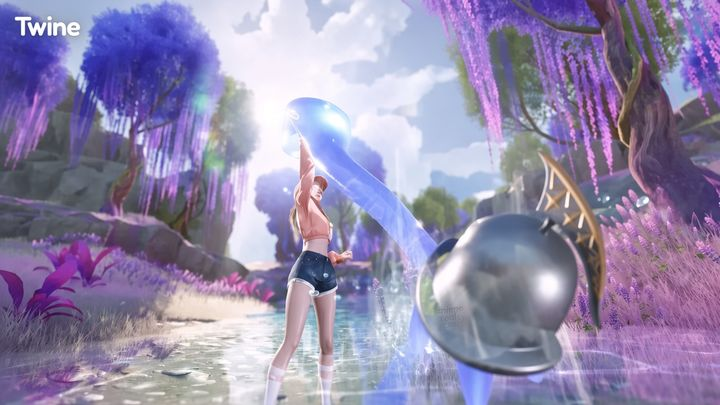
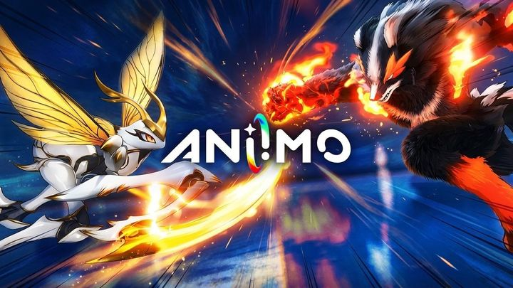

Raccolta in italiano della lore e della storia del gioco
Lore di Aniimo
I capitoli del mondo di gioco
Il mondo di gioco poggia su due mondi sovrapposti: Astra, la città fluttuante costruita dagli umani dopo aver lasciato la Terra, e Idyll, il continente selvaggio sottostante dove vivono gli Aniimo. Secondo la leggenda Idyll fu creato da nove Aeon, ciascuno a guardia di un dominio. Sotto il suolo scorrono le Vene, la rete di energia vitale che spiega gran parte delle meccaniche: Rami, Fioriture, Ambra Lumin e Flusso Prismana.
Il racconto
Un'introduzione, un prologo e nove capitoli, dalla fine della Terra alla storia che vive il giocatore.

Prima di cominciare
Una mappa del viaggio: cosa racconta ogni capitolo, dove trovarlo e come usare indice, ricerca, giorno e notte e musica.

La storia di Aniimo
Dalla fine della Terra alla nascita di Astra: la storia di Aniimo in breve, dai nove Aeon alle Vene fino al primo passo del Pathfinder.

Astra e l'Istituto Polaris
La città sospesa sopra Idyll, la Lumintech e l'Istituto Polaris, con i suoi tre strumenti: Avamposto, Aniipod e Omni-glove.

Idyll e l'Antica Idyll
Il continente selvaggio sotto Astra e la civiltà perduta dell'Antica Idyll, tra rovine, Mechina e Santuari.

Gli Aniimo
Le creature di Idyll: forme, abitudini, Energia Elementale ed evoluzioni.

Il Pathfinder
Chi apre la strada a Idyll: l'origine del nome, il ruolo dei Pathfinder e il posto del giocatore.

Il Twine (intreccio)
Il legame che unisce umano e Aniimo: condividere i sensi, muoversi e combattere con le sue abilità.

Le Vene
La rete di energia sotto Idyll: Rami, Fioriture, Ambra Lumin e Flusso Prismana.

La Costa dello Zefiro
La terra dell'Aeon Aeolus: le Pianure Ventose, Bloomville e il mistero di Irelia.

Leggende e murali
Le leggende dipinte di Idyll: Helgon, Rookey e Infergon, e le tavole che raccontano storie più intime.

La storia principale
La trama vissuta dal giocatore, da Starfall Valley agli episodi di Bloomville. Contiene anticipazioni sulla storia.
Approfondimenti
Per ritrovare una parola, chiudere il racconto o controllare le fonti.